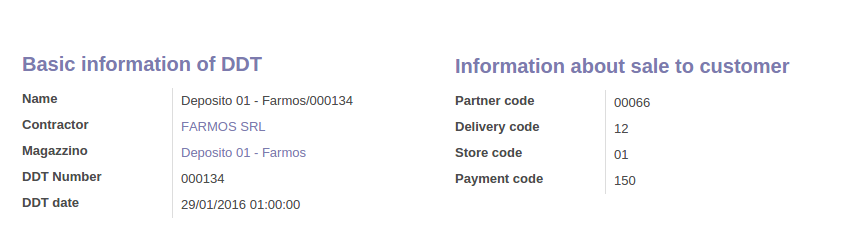
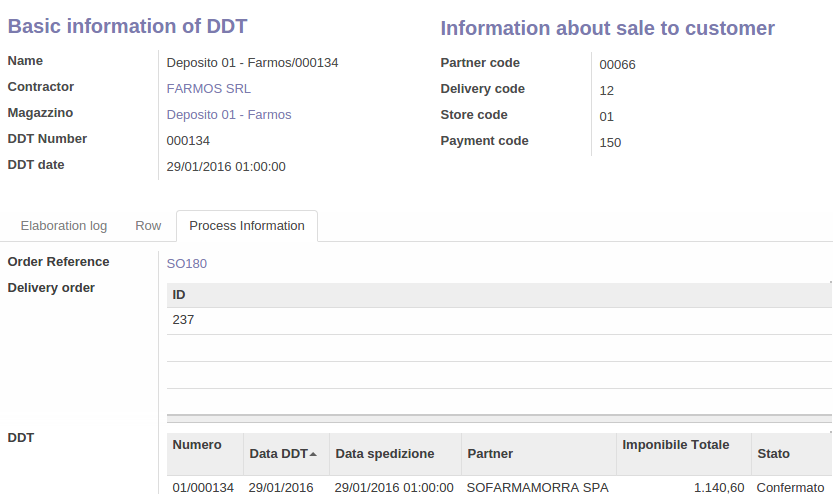

Decrizione della procedura di importazione DDT
All'interno del menú Magazzino, sotto la voce Operazioni é stata
introdotta la nuova funzione Importa movimenti DDT.
Utilizzando tale funzione viene visualizzata una lista con tutti i movimenti importati e relativo status (o in alternativa la lista vuota se non
sono presenti movimenti). Tali movimenti NON rappresentano i DDT ma sono soltanto dati riepilogativi ed organizzati che sono stati
reperiti dal file csv importato.
 É possibile rielaborare il movimento selezionandolo dalla vista lista ed utilizzando il pulsante Altro
Elabora movimenti.
É possibile rielaborare il movimento selezionandolo dalla vista lista ed utilizzando il pulsante Altro
Elabora movimenti.

Inoltre é stato aggiunto il campo "codice pagamento" sotto: Contabilitá -> Termini di pagamento.
Per importare un file csv é presente in alto, Importa DDT. La funzione, si aspetta un file CSV congruente alle specifiche descritte nella sezione Specifiche formato file CSV I movimenti di importazione ddt possono assumere 4 stati:
- ready (pronto)
- except (in erorre)
- in process (in elaborazione)
- done (elaborato)
In alternativa, é possibile modificare i dati manualmente all'interno di ogni singolo movimento. I dati disponibili per la modifica sono:
- Codice partner
- Codice di spedizione
- Codice magazzino
- Codice pagamento
- Righe di prodotti (presenti nel tab righe).
- Nome (composto da terzista /numero ddt)
- Terzista
- Numero del DDT
- Data del DDT
Informazioni base sul ddt (per le quali non é abilitata la modifica):
- Codice cliente al quale é stata venduta la merce
- Codice di spedizione
- Codice del magazzino
- Codice pagamento
Informazioni sulla vendita al cliente:

Se il movimento, durante l'elaborazione vá in errore (status except), viene visualizzato di colore rosso nella lista.
All'interno del movimento in errore, si attiva un nuovo tab (Except Information) che descrive la causa dell'errore che impedisce la creazione del DDT.
Se l'errore si riferisce ad una riga di prodotto, all'interno del tab delle righe viene evidenziata la riga in errore.
Se un movimento si trova in stato di except si deve procedere nel seguente modo:
- Verificare all'interno del tab Except Information a cosa é dovuto l'errore.
- Correggere l'errore modificando il movimento o reimportando il file CSV corretto.
- Utilizzare il pulsante Reset to Ready per cambiare lo stato del movimento riportandolo allo stato di pronto.
- Rielaborare il movimento.
Inoltre é stato aggiunto il campo "codice pagamento" sotto: Contabilitá -> Termini di pagamento.
ATTENZIONE!!
La procedura di Elaborazione dei movimenti, tiene in cosiderazione solo i movimenti con status ready (pronto). Non verranno elaborati, anche se selezionati, movimenti con stato diverso da pronto. Ricordarsi di utilizzare il pulsante Reset to Ready, presente all'intero del movimento, per resettare lo stato da errore a pronto.I movimenti che vengono elaborati senza errori assumono lo stato di pronto (ready). All'interno di questi movimenti, nel tab "Process Information" sono presenti i riferimenti a:
- Ordine di vendita (in stato confermato)
- Ordine di consegna (Con movimenti giá trasferiti In caso di giacenze non disponibili viene forzato il trasferimento)
- DDT in stato confermato
